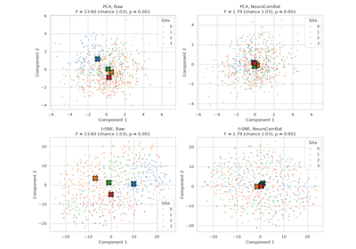

site_centroid_distance#
- uniharmony.metrics.site_centroid_distance(X: ArrayLike, sites: ArrayLike, y: ArrayLike | None = None, metric: str = 'mahalanobis', n_permutations: int = 1000, random_state: int | RandomState | None = 42) dict[str, Any]#
Quantify how far apart the site centroids are, relative to chance.
If no Effect of Site (EoS) is left in
X, the site centroids (the per-site mean vectors) differ only by sampling noise. This function measures the between-site spread of the centroids relative to the within-site spread, as a pseudo-F statistic:F = [tr(M B) / (n_cells - n_strata)] / [tr(M W) / (n_samples - n_cells)]
where
BandWare the between-site and within-site scatter matrices andMis set bymetric. Without an EoS,Fis close to its permutation null mean (about 1 for the"euclidean"and"standardized"metrics). The null is obtained by permuting the site labels (within the classes ofy, if given).- Parameters:
- Xarray-like of shape (n_samples, n_features)
Feature matrix. To evaluate a harmonization method, pass held-out data harmonized with a model fitted on training data (see Notes).
- sitesarray-like of shape (n_samples,)
Site label of each sample. Every site needs at least 2 samples.
- yarray-like of shape (n_samples,), optional (default None)
Categorical biological variable (e.g. diagnosis or sex) whose effect must not be counted as EoS. If given, sites are compared within each class of
y: class means are removed, the scatter is computed per site-class cell, and labels are permuted within classes. Use it when the class proportions differ between sites.- metric{“mahalanobis”, “standardized”, “euclidean”}, optional (default “mahalanobis”)
Geometry used to measure the distances (choice of
M):"mahalanobis": inverse of the pooled within-site covariance. Sensitive to EoS along low-variance directions of correlated features. The within-site correlation matrix is shrunk towards the identity (Ledoit-Wolf), so the result does not depend on the feature units; with full shrinkage it equals"standardized"and without shrinkageFis the Lawley-Hotelling trace divided by(n_cells - n_strata) * n_features. Costs onen_features x n_featuresinversion per permutation."standardized": each feature divided by its pooled within-site variance.Fis the mean univariate ANOVA F over features."euclidean": features as given.Fis the Calinski-Harabasz index of the site partition.
- n_permutationsint, optional (default 1000)
Number of site-label permutations for the null distribution. Use 0 to skip the permutation test.
- random_stateint, RandomState instance or None, optional (default 42)
Seed of the permutations.
- Returns:
- dict
"statistic": float, the pseudo-F."r2": float, share of the (M-weighted) variance explained by site, in [0, 1]."null_mean","null_std": float, mean and standard deviation of the permutation null ofF."z_score": float,(F - null_mean) / null_std."p_value": float, permutation p-value,(1 + #{F_perm >= F}) / (1 + n_permutations)."null_distribution": np.ndarray of shape (n_permutations,)."pairwise_distance": pd.DataFrame of shape (n_sites, n_sites), bias-corrected distance between each pair of site centroids.
The null entries are NaN when
n_permutations < 2.
- Raises:
- ValueError
If
metricis unknown,n_permutationsis negative, fewer than 2 sites are given, a site has fewer than 2 samples, or no class ofycontains more than one site.
Notes
The squared distance between two estimated centroids is biased upwards by sampling noise:
E||m_a - m_b||^2 = ||mu_a - mu_b||^2 + tr(S_a)/n_a + tr(S_b)/n_b. Small sites therefore look far away even without EoS."pairwise_distance"subtracts this term (the unbiased estimator of the linear-kernel MMD) and clips negative values to 0.With
metric="mahalanobis", a pairwise distanceDis a multivariate standardized mean difference. For two Gaussian sites with a common covariance, the best balanced accuracy of predicting the site fromXisPhi(D / 2): 0.69 forD = 1and 0.84 forD = 2(compare withevaluate_site_prediction()).The metric only sees site means: differences in variance or covariance between sites are not measured. Methods like ComBat equalize the site means of the data they were fitted on by construction, so compute this metric on held-out data. Do not compute it on t-SNE or UMAP embeddings: they do not preserve distances between clusters.
Examples
>>> from uniharmony.datasets import make_multisite_classification >>> from uniharmony.metrics import site_centroid_distance >>> X, y, sites = make_multisite_classification(n_sites=3, n_samples=300) >>> result = site_centroid_distance(X, sites, y=y, n_permutations=200) >>> result["p_value"] < 0.05 True
Examples#

Measure the Effect of Site with centroid distances